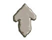

Presentación
Bienvenidos a nuestro proyecto: La creación de un juego basado en "Avatar: La leyenda de Aang".
En esta página, exploraremos cómo convertimos una idea inspirada en el capítulo "La cueva de los enamorados" en una novela visual y, posteriormente, en un minijuego interactivo. Acompáñanos en nuestro recorrido creativo y técnico, ¡esperamos que te inspire! Primero presentaremos a las encargadas de convertir esto en algo real:
Gavilan Fiorella
Legajo 119039/8
You can also place image on the bottom of the card.

Erbes Yamile Nazarena
Legajo 94700/7
Tengo 19 años, toco la bateria, tengo 8 gatos y 2 perros.